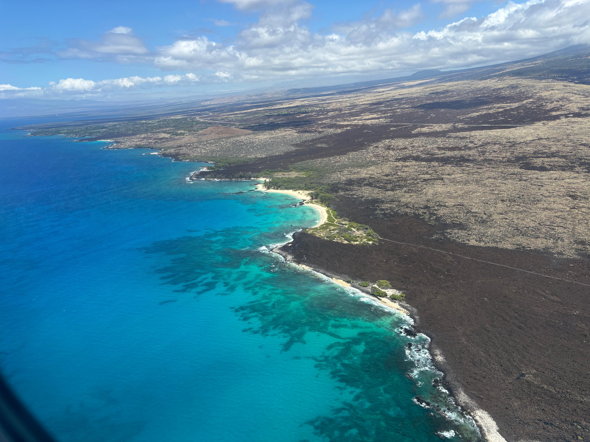
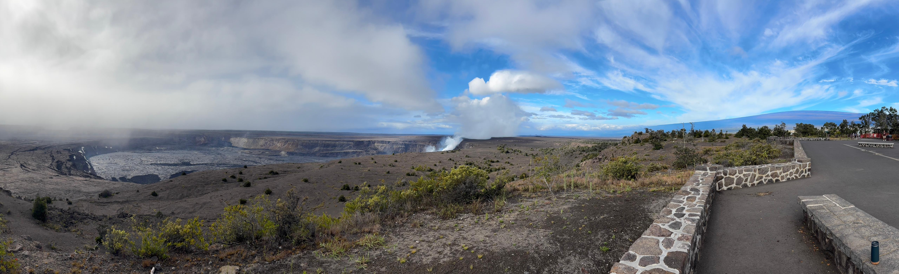
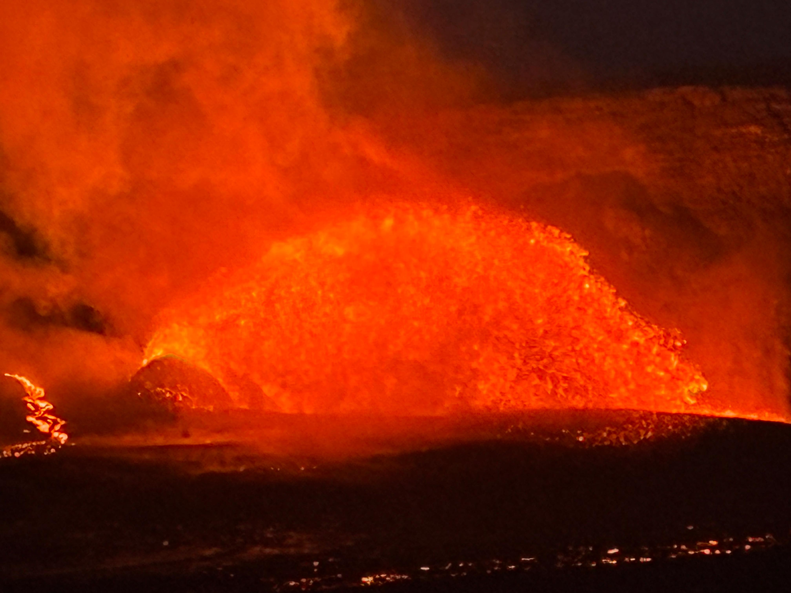
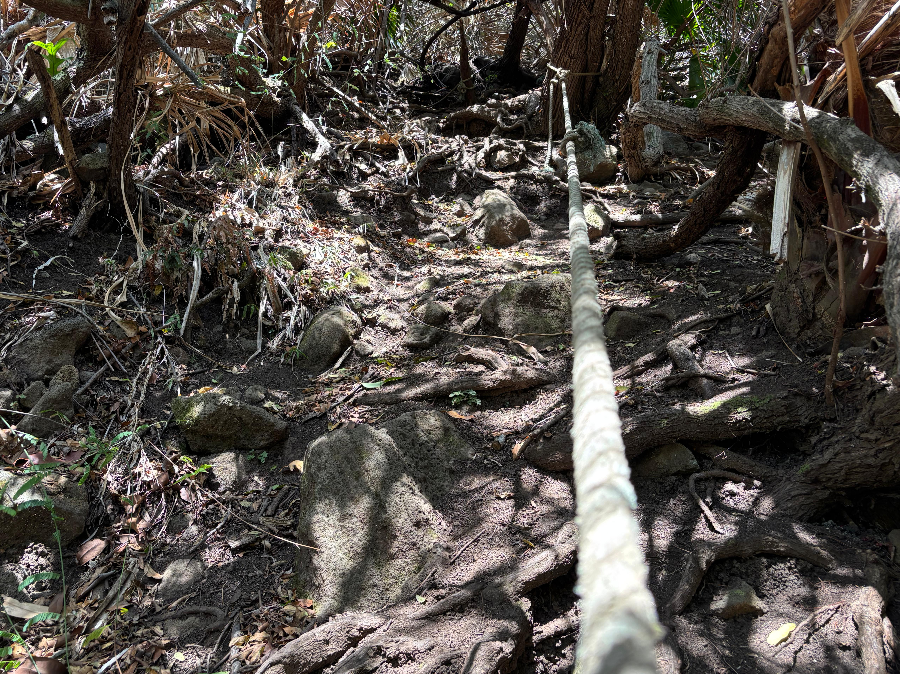
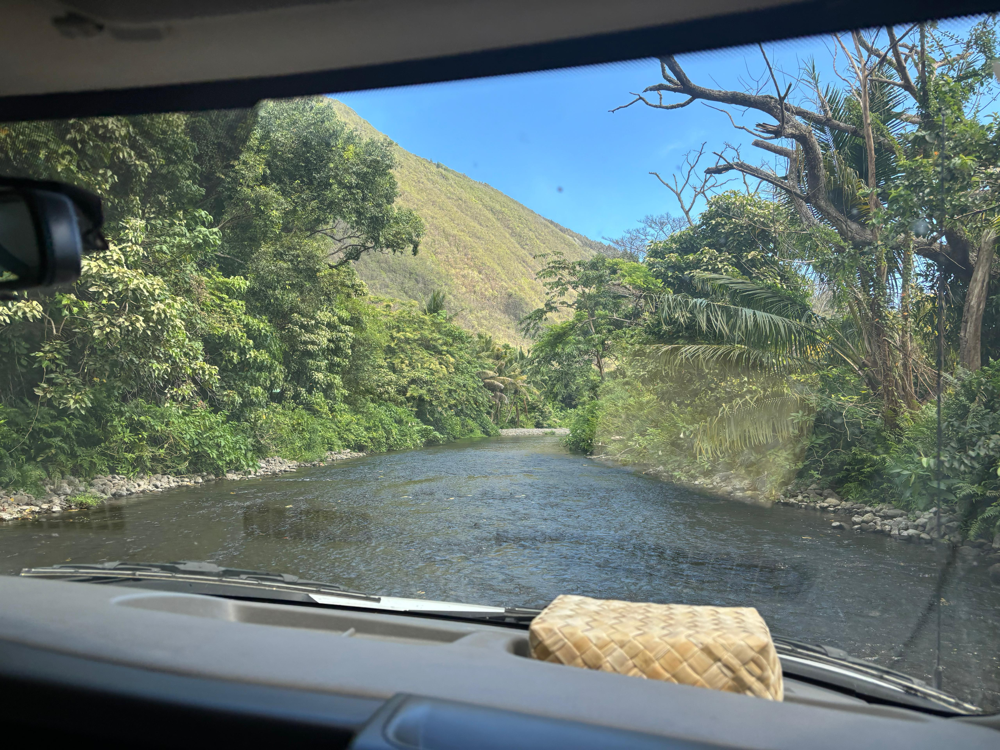
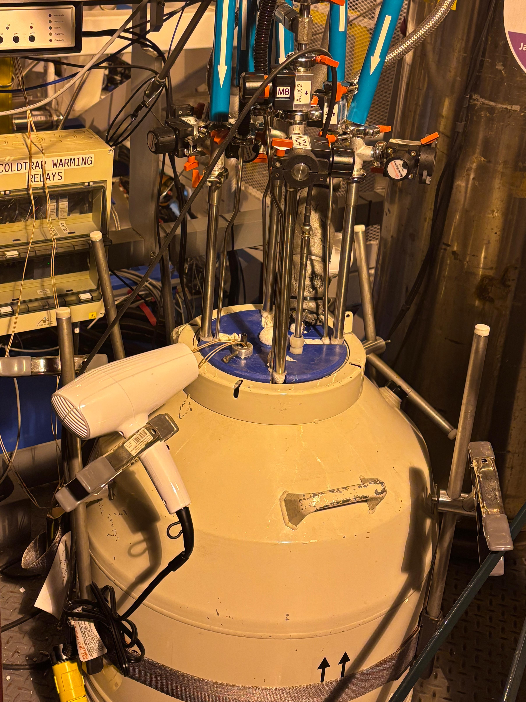
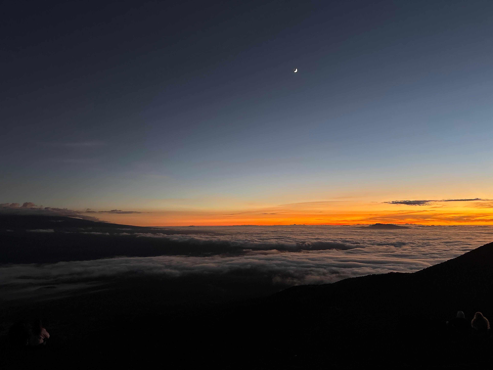
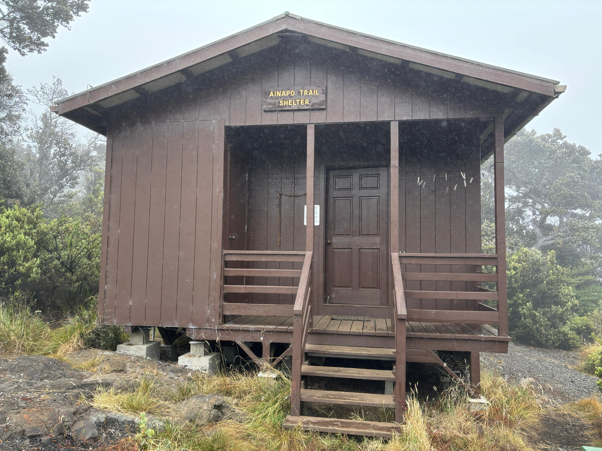
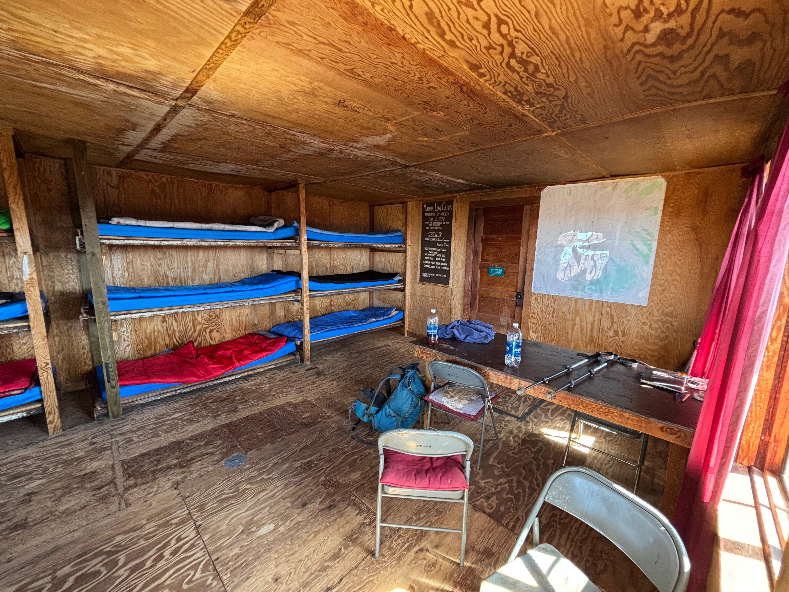
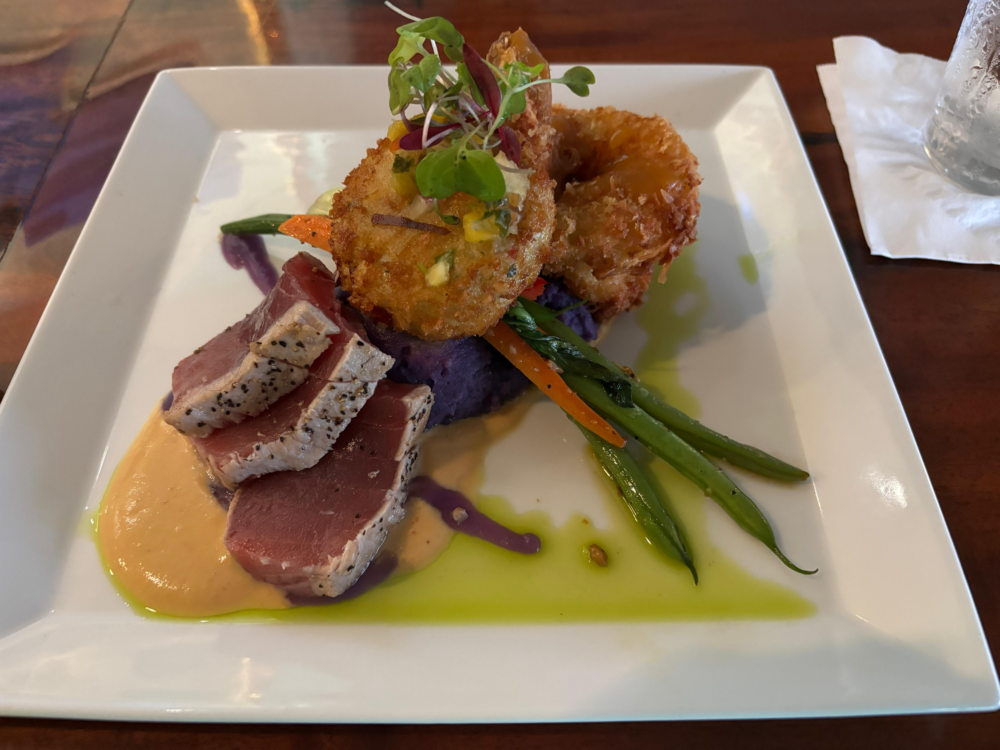

Satellite picture of Hawaiʻi. Most of the places mentioned in this diary are indicated with a blue label and arrow.
This is a diary about my solo trip to the Big Island of Hawaiʻi in August 2025. This island had been at the top of my to-do trips for more than 10 years, for reasons that I will explain below. Given how special this adventure was to me, I decided to write down this memoir about it, both for my future self and to inspire others.
This page was last updated on September 11, 2025.
Here are the links to all the sections within this page:
When I was a kid, about 6 years old, my parents gave me two scientific atlases as a gift: one about astronomy, the other about Earth science. The former turned out to be, I would say, the single most influential book in my life. Not that I wouldn't have gotten into science and astronomy otherwise—I certainly would have. But it was the first time I became obsessed with space, and I ended up memorizing almost the entire book. The central part of the atlas contained, for each of the nine planets (yes, this was pre-2006), two dedicated pages, which included several closer looks at their most interesting features. One of these was about Olympus Mons on Mars: the tallest mountain in the Solar System, an enormous shield volcano measuring 26 km from base to top, and 600 km in diameter. I was incredibly fascinated. It was so much bigger than any mountain on Earth, and it was a volcano as well! Can you even imagine seeing Olympus Mons erupting? According to the atlas, its most similar mountain on Earth the was the Mauna Loa, Hawaiʻi's largest shield volcano: the Earthly version of a geological wonder from a different world.
Like all kids, I loved volcanoes. I was born and raised in Campania, an Italian region that hosts many of them. Naturally, the Vesuvius had always been my favorite: how could you not love the protagonist of the most famous volcanic eruption in history, which destroyed Pompeii in 79 AD? But deep down I knew the Vesuvius was more dirty than the Mauna Loa. The other atlas, the one about Earth science, had many pages on volcanoes, classifying them by type. Of course the first type, the ones with the most fluid and silica-poor lava, the most massive, the most active, arguably the purest of them all, were Hawaiian shield volcanoes. And there it was again: the Mauna Loa as their prototypical example. A mountain that raises over 9 km from its base (even more than Everest), alongside its older friend Mauna Kea. So perfect in being Hawaiian that it defines what being a Hawaiian volcano truly means.
At the time I got most of my information from books, rather than the internet. As this gradually changed over the years, and I started following online scientific sources, I learned that most active volcano in Hawaiʻi, and in the world, was actually Kīlauea, topographycally a mere bulge on the side of Mauna Loa. And so I learned the true story of the island of Hawaiʻi, and of the whole Hawaiian–Emperor seamount chain. The newborn, Kamaʻehuakanaloa, has yet to emerge from the sea. Behind it there's the youngster, Kīlauea, so eager to grow that it almost never stops erupting its very fluid lava. Mauna Loa follows, showing the youngster how it is like to be an adult. And then the grandfather Mauna Kea, whose best days are now passed, but is still paid immense respect by everyone else. And finally Kohala, now passed away, who is gradually returning into the sea, where everybody once was. (Sorry Hualālai, nobody really cares about you...) The whole chain of islands behind Hawaiʻi shows generations of such families of volcanoes, tracing the relative motion of the Hawaiʻi hotspot and the Pacific plate.
For many consecutive months in 2017, lava from Kīlauea's secondary cone Pʻuʻuʻōʻō created an incredibly perfect lava waterfall, which jumped into the Pacific ocean while still glowing bright orange. In 2018, Kīlauea's enthusiasm became a bit excessive, and it erupted in a way I had never seen before. While its main crater, Halemaʻumaʻu, and Pʻuʻuʻōʻō collapsed, lava started coming out of the ground in a series of fissures at Leilani Estates. Just like that, one day you wake up and there is lava in your living room. From May to August, every day I watched how this incredible eruption evolved, with lava initially spilled over residential areas, and eventually poured into the Pacific ocean, elarging the size of Hawaiʻi before the world's eyes. That's how these islands were born, and how they grow. That's when I understood the power of Pele, the goddess that inhabits Kīlauea and creates new land.
Apart from my fascination for these volcanoes, there is also something in general about remote islands that attracts me. One big reason is that isolation allows biological evolution to take unique routes. There are many examples of this, but one I will mention is ʻōhiʻa, a tree endemic to Hawaiʻi that evolved to grow on lava, and which is also a Myrtacea, just like my favorite tree Eucalyptus globulus subsp. globulus. Another special feature of remote islands, in particular the Polynesian ones, is their late and remarkable history of human settlement. I find the Polynesian dispersion one of the most unbelievable bits of recent human evolution, together with the genetic and cultural aspects that come with it. Similar considerations also apply to Easter Island, the Galápagos, the Canary Islands and the Azores. The climate of Hawaiʻi is also unique, compressing anything from hot desert to alpine tundra, from rainforest to mediterranean, in the span of a few kilometers. And finally, like other volcanic islands, Hawaiʻi is a fantastic place for astronomy (in fact, the best such place in the Northern Hemisphere), as proven by the numerous telescopes on the summit of Mauna Kea. I don't need to explain why that matters to me.
Why August 2025?
If had dreamed of visiting Hawaiʻi for so long, why did I decide to go in August 2025? It turned out to be more of a late decision than I would have imagined for such a special place, but I had a couple of days in late July when I realized that this was really the perfect moment to go. First of all, I had always known August was the best month for a Hawaiʻi trip, climate-wise. The emptiness and canteen-less of the IAS were also prompting me to leave in August. But the biggest and most concrete reason was that Kīlauea had entered an eruptive phase, since early 2025, where it was creating lava fountains, sometimes as high as 380 m, in a quasi-periodic way. The eruptions were also predictable by monitoring the angular deformation data published by USGS: the volcano would slowly inflate up to a critical point, where lava fountaining would start, quickly bringing deflating it back to its original level within a few hours. The interval between such episodes was typically a week to 10 days: it really was a golden occasion to catch a Hawaiian eruption in person. A viewing area south of Halemaʻumaʻu had also been reopened to the public in May, making the show easier for everybody to see, as well as me jealous of those lucky enough to be there.
Angular deformation of Kīlauea from the start of the eruption to early August 2025. Periods of rapid deflation correspond to lava fountaining. On July 24, I bought by tickets for August 18-28.
There were also a few other reasons to go. While August was the perfect holiday month while being at the IAS, I only had three such chances (August 2025, 2026 and 2027), as my postdoc would end in July 2028 at the latest. But two solar eclypses would be happening, one in August 2026 and the other in August 2027, and after witnessing the one in April 2024 I had decided I wanted to see the next ones as well. This left August 2025 as the only totally unconstrained holiday month. After confirming that the moon was not going to be full in the second half of August (I like stargazing), on July 24 I bought my tickets for August 18-28. The timing also worked out perfectly with a paper I was working on at the time, as we managed to finish the draft and send it around for comments precisely on August 18.
There was just one little issue that bothered me. I wanted of course to hike to the summit of Mauna Loa, which could be done from 3 trails: the Observatory trail, the Mauna Loa trail and the ʻĀinapō trail, from the easiest to the hardest. While the hike from the Observatory trail could potentially be done in one day, the other two generally require three days. Since 2022, however, lava flows had rendered impracticable sections of the Observatory access road and of the Mauna Loa trail. This left ʻĀinapō as the only option. ʻĀinapō is the historical trail, pioneered by native Hawaiians, to the summit of Mauna Loa. It ascends the steepest slope of the immense volcano, away from the rift zones, passing through a relatively little amount of recent volcanic formations. The hike is extremely grueling and for this reason unpopular, so I thought that I would better leave Mauna Loa alone this time, and give myself a reason to come back in the future. How wrong I was.
Acknowledgements
Several people made this trip better than it would have been otherwise. I asked for suggestions Alina Sabyr, the only (former) resident of Big Island I knew. She gave me an amazing list of places to check out, recommended restaurants, and kept giving suggestions during my trip. Almost all restaurants mentioned in this diary have been suggested by Alina. Adrien Kuntz sent me his Big Island guide and blog, which were very helpful in planning my hikes, even though access to some of the places he liked the most has been restricted in recent years. Emma Weller also gave me some useful touristic suggestions. I must thank George Wong, who put me in contact with Geoff Bower (Director of the East Asian Observatory), who in turn allowed me to have an amazing visit at the James Clerk Maxwell Telescope, with Deputy Director Dan Bintley. I also want to thank kind Big Island residents who responded to my posts online and gave me their tips, before I started my trip: Katie Jade Getchell, David Lee, and Ray DiSalvo.
Day 1 (August 18): Aloha
I was sitting on the good side of the airplane. The first lesson Big Island taught me is how tridimensional it is, greeting me with a view of Mauna Kea towering above the Kohala valleys, and the colorful North Kona coast. I found the Kona airport funny, as it was composed of many open-air pavilions, rather than a single enclosed building.
Mauna Kea and Waimanu valley from the plane.Some of the Kohala valleys, from Honopue (left) to Pololū (right), from the plane.

Puʻu Aliʻi Bay and Makalawena beach from the plane.
I quickly got my rental car, a Cadillac XT5, and drove to the B&B, located just 15 km away on the lower slopes of Hualālai. I could now experience the tridimensionality through the steepness of the roads and the surprising temperature change compared to sea level. After a quick shower it was already mid afternoon, so I headed to Kua Bay do something simple and relaxing I hadn't done in countless years: a swim at sea. I have never been a fan of beaches and sea, but this was actually one of the best swims I can recall: warm and crystalline water, mild sun, beautiful beach. I then headed to Kailua-Kona, where I had dinner at Thai Rin Restaurant while watching a spectacular sunset. I then got an ice cream at Gypsea Gelato before heading back for the night. I quickly found out that during my nights in Hawaiʻi I would have been kept company by the very peculiar mating calls of Coqui frogs.
The rental car for my first 10 days on Big Island.Kua bay.Sunset from Kailua-Kona.
Day 2 (August 19): Fissure 8
I woke up at 4:30—jet lag is amazing when going West. Kīlauea's inflation was creeping up, and I had booked accommodation in Volcano vollage for the next two nights, so I decided to do a quick hike near Hualālai before leaving the Kona area. I went to Puʻu Waʻawaʻa, an ancient cinder cone from which I saw the sun rising from behind the summit of Mauna Kea, together with a nice view on the other three mountaints of the island: Hualālai, Mauna Loa, and Kohala. The hike did not actually go very well: I did not reach the top of Puʻu Waʻawaʻa as several bulls were blocking my road while looking at me menacingly. I decided I could not risk my life before seeing the rest of the island, so I headed out by 8:30.
In Kailua-Kona, I first had to do some necessary shopping of food, water and other stuff. I then went to Basik Açaí and enjoyed the best açaí bowl I had ever had, which also ended up being the culinary highlight of the entire trip. I then stopped by Da Poke Shack, got my lunch to-go and headed South. Driving along Hawaiʻi Belt Road is pretty scenic, as you constantly have the ocean on one side and an enormous mountain on the other. After passing by a terrifying place known as Ocean View, I stopped by a very windy scenic point on the South flank of Mauna Loa, overlooking South Point 20 km away: a very impressive yet unphotogenic view.
The sun rises over Mauna Kea, as seen from Puʻu Waʻawaʻa.The "Islander" açaí from Basik Açaí. So good!A scenic point on the South flank of Mauna Loa. Believe me, it looked much nicer in person!
Overlooking Green Sand Beach.
After enjoying the view, I came back to the car and called Melissa. Who is Melissa, you might be asking? I found her name in Scott Manley's video where he visited the site of the 2018 Kīlauea eruption in Leilani Estates. I asked whether she could let me visit the 7-year old volcano that now inhabits her backyard. She replied that yes, she was happy to, but I had to hurry up, as her dog was barking impatiently, meaning that Pele was about to erupt and she didn't want me to miss the show back at the summit crater. I hang up with a smile and drove a little faster than allowed, as I still had two planned stopovers before Leilani Estates.
I turned into South Point Road and parked not far from the Southernmost point of the United States. While plenty of tourists were paying to be carried by 4WD trucks in a safari-style, I was ready to hike 4.5 km (and back) along the coast, destination Green Sand Beach. The hike was amazing! A mixture of colors surrounded me: the bright yellow road, the dark black rocks and the deep blue ocean, while the white waves loudly crashed into the rocks and the strong wind repeatedly tried to blow my hat away. I was constantly reminded of my coast walks in Sydney in November 2023. I reached Green Sand Beach in 45 minutes and it was just spectacular, definitely above expectations! (Except for all the tourists who reached it with the trucks...) I hid under a rock to take a break from the sun, took out the box I got from Da Poke Shack, and had my lunch there. Quite amazing!
Then, I hiked back to the car. I drove fast to Volcano village (more like a rainforest than a village), where I checked-in the hostless hotel and took a quick but much needed shower. I heard someone shouting and fighting, but didn't pay much attention to it: I got back in the car, called Melissa and told her I would have been by her house in 1 hour.
Hiking to Green Sand Beach.Green sand.Da Poke Shack at Green Sand Beach: what a combo!
Melissa's house is right next to Fissure 8, also known as Ahuʻailāʻau: the dominant of the 24 eruptive fissures that opened in May 2018 in Leilani Estates. This historic eruption claimed many houses in the area, and the lava eventually extended the surface of the island by a few square kilometers. As I approached the place, I got glimpses of the 50-meter-high spatter cone hiding behing the buildings and the rainforest. Melissa didn't let me wait much, and soon led me through the trail behind her house. What a sight it was! The rainforest suddenly stopped, giving way to a large lava and tephra field surrounding Ahuʻailāʻau. We didn't go straight to it, however: there was so much more to see than I expected. Melissa brought me to the nearby Fissure 24, allowing me to play for a good half-hour with the most incredibly fresh volcanic rocks I had ever seen. Several holes were still hot and steamy, and everything was so colorful, full of crystals and weird rocky shapes. Seeing my excitement, Melissa exclaimed: «Hey Gimmy, catch this!», as she threw a small microscope to me. Needless to say, things looked even more interesting through it!
Where rainforest suddenly turns into a lava field.A 100-meter-deep hole in Fissure 24.Zeolites and sulfites in Fissure 24.Sulfur crystals seen through Melissa's microscope.
After leaving Fissure 24, we walked towards Fissure 8 (aka Ahuʻailāʻau) and climbed it. The view was just incredible: the inside of a colorful and diverse volcanic cone was only a few meters from me. I could also see the long lava river it created, up to its entry point in the ocean, 12 km away. The surrounding rainforest also made for a weird scenery. We spent another half-hour there, during which I left Pele a small offering of dried fruit, praying her to let me see fresh lava in the coming days. I didn't trust Melissa's dog enough. Overall, I left with the feeling that this was the most raw experience of volcanism one can possibly have on this planet.
Walking with Melissa towards Ahuʻailāʻau.Looking inside Ahuʻailāʻau, and to its lava flow extending until the ocean 12 km away.The view from the top of Ahuʻailāʻau. See the sharp transition from lava/tephra field to rainforest village!
I had dinner in a weird bar in Pahoa, where the bartender kept asking me questions on how else he should have made the pizza to truly please an Italian, while a drunk Lithuanian guy was challenging me to play pool. I managed to escape and get back to Volcano village, where I found two police cars and an ambulance right in front of my hotel. It turned out that the shouting I had heard a few hours earlier had evolved into a physical fight between a man and a woman, with a third person getting in the mix to try and calm things down. The man, full of blood, was carried away by the ambulance, as the woman spilled over pills and cigarettes in the hotel's living room while asking the policemen if they had a lighter. I managed to get into my room after the situation was cleared. What a crazy day!
Day 3 (August 20): Kīlauea
I woke up at 5:30, and at 6:00 I had a 30-minute call with Andrea Caputo, discussing a possible project together on fuzzy dark matter. Still a bit tired from the intense Day 2, I took it easy and left the hotel around 7:00, shopping some food for the day and then heading to the entrance of Hawaiʻi Volcanoes National Park. Finally I was at the Kīlauea summit, the home of Pele! Angular deformation had deflated overnight, so I expected the volcano to not erupt for at least two more days, and I decided to spend the day exploring the most popular attractions of the Park. First, I drove along the North section of Crater Rim Drive, reaching Uēkahuna, the Kīlauea overlook and the steaming vents. The view on Kaluapele (Kīlauea caldera) and Halemaʻumaʻu inside it was amazing. I could see a dense plume of gas rising from the point where I was hoping to see lava fountains spouting sometime in the next few days, as well as the floor of the crater being covered in fresh black lava. The other side of my field of view was dominated instead by the clearest view of Mauna Loa I had gotten by that point. I stopped and stared at it for a few minutes, wondering whether I would forgive myself for leaving the island without trying to reach its summit. Deep down, I knew I would not.

180° panoramic view from Uēkahuna, showing the crater Halemaʻumaʻu within Kaluapele (Kīlauea caldera) on the left, and Mauna Loa dominating the horizon on the right. The white plume of gas at the center was emitted from just above the North vent of Halemaʻumaʻu, that is, the point where lava fountains had formed the previous weeks and months.
While I was checking out the (very hot!) steam vents, a violent storm broke out, forcing me inside the car for some time. I then drove to the East side of Kaluapele, where I took a nice walk inside the Nāhuku lava tube, and later hiked down the Kīlauea Iki crater. Walking on the floor of a crater that was a lava lake 65 years was pretty cool. I liked the hike, however temporary works near the end of the trail forced me to retrace my step to get back to the car, rather than doing a loop as I expected. I then walked along the Devastation Trail, and reached the overlook from the South of Kaluapele from which I had seen many videos of people watching past lava fountains. The place was simply amazing, offering a super clear view of Halemaʻumauʻ, as well as of the Mauna Loa, prospectively behind it. The vents and their gas plumes were also clearly visible. They say Pele likes ʻōhiʻa, so I left her a small offering, hoping she would let me see some lava show.
Walking inside the Nāhuku lava tube.Overlook of the Kīlauea Iki crater (about 1 km long). The white strip at the center is the trail.Madame Pele, please accept these flowers of ʻōhiʻa and let me witness your raw power.
Having explored most of the Kīlauea summit area, I started driving down Chain of Craters Road, a 30 km-long road that follows part of the Kīlauea East rift zone, and then descends down to the ocean. This road left me speechless! As I was driving, I was thinking it must be one of the most unique roads in the world. The first part winds through several craters scattered within the rainforest. After about 10 km, the scene changes drastically as the road enters enormous lava flows, which go down the Kīlauea flank and enter the ocean, kilometers away but clearly visible. The road is full of scenic points where you can stop: I took every single one of them and did not regret any. Even after traveling just 500 m or so from any of the scenic points, there's some new lava flow you can see, or a new perspective on the Hōlei Pali (cliff) you can enjoy. The difference between pāhoehoe and ʻaʻā lava flows is very evident, the former being smooth and light gray, the latter being dark and rough. The road ends in style, with a view of the Hōlei Sea Arch, where lava and ocean meet. I certainly didn't mind having to drive up the same road to get back to the volcano.
View of Hōlei Pali from Chain of Craters Road.Pāhoehoe (gray) and ʻaʻā (black) lava flows down Hōlei Pali.The Hōlei Sea Arch.
By the time I got back to Crater Rim Drive, it was 16:30. I still had in my mind the views of the Mauna Loa from the morning, and I wanted to talk with the Park rangers about the ʻĀinapō trail. The Kīlauea Visitor Center was closed for renovation, so I was redirected to the temporary Welcome Center, by the Kīlauea Military Camp. As soon as I got there, a young woman approached me, saying she had seen me around the Visitor Center area, and that she also wanted to get more information about the Park. I went with her to the Welcome Center, which unfortunately had just closed at 16:45. Though, I still managed to intercept a ranger and ask about ʻĀinapō. The ranger raised an eyebrow, said that the trail wasn't very popular and that I would have likely been alone up there, and gave me a backcountry map before leaving. The young woman had remained next to me the whole time, and when I got back to the car she asked what I was going to do next. I replied that I was going to have dinner, and I left. It then occurred to me that she wasn't probably very interested in volcanoes. Sorry, Ma'am. Maybe next time. The only woman in my mind that day was Pele anyway.
After a dinner with fish nuggets in Volcano village, I got back to the hostless hotel (no police cars this time), watched a few youtube videos and fell asleep.
Day 4 (August 21): to Hilo
I woke up early and found out with great disappointment that Kīlauea had continued to deflate overnight. I was starting to get nervous. The previous day I had booked an extra night in a different accommodation Volcano village, and now I decided to book one more. I was really, really hoping to see the eruption while I was in the area. First I went to the Backcountry Permit Office to ask more information about ʻĀinapō. An elderly woman greeted me and explained that the trail is indeed very unpopular: «Usually people don't go alone, when someone tries it it's generally a couple or a small group. But I remember someone had managed to do it alone. If you go, it's an adventure.» She was being very professional, but I could hear in her voice a subtle encouragement, something like: «You are the kind of person who can do it.»
By this point, I had already seen a decent number of the popular attractions of Hawaiʻi Volcanoes National Park. Of course there were many potential backcountry hikes, but the only one I was potentially willing to spend so much time on was the Mauna Loa. What I was really missing now was the eruption, which was unlikely to happen on that day. Thanks to George Wong, I had been in contact with Geoff Bower, Director of the East Asian Observatory, who had invited me to visir their headquarters in Hilo. I decided this could be a good day to do that.
On the way to Hilo, I conveniently stopped to see three interesting places in Puna. First, I went to the Lava Tree State Monument, where carbonized trees stand as leftovers of past lava flows. The place was interesting but perhaps slightly underwhelming. I then moved to Kalapana, a village that was almost completely destroyed in 1990 (and then again in 2010) by lava flows from Kīlauea. I walked over some of the recent lava flows and accessed the former site of Kaimu Black Sand Beach—now not quite a sandy beach anymore, but an impressive mixture of fresh black lava, young trees and ocean waves.
Carbonized trees at the Lava Tree State Monument.To Kaimu Black Sand Beach.What remains of the black sand of Kaimu.
I then proceeded to yet another Black Sand Beach, this time in Kehena. So worth it! This turned out to be my favorite beach in the entire island. Once again, the color contrast was incredible. But the sand of this beach was much more coarse than what I had seen elsewhere, creating a weird effect where the waves were getting absorbed by the shoreline, rather than simply flowing back to the sea. A few brave people stood with their feet in the ocean, but the waves were far too strong for anybody to safely swim. I spent there a good amount of time, until I felt like my eyes couldn't take more beauty in.
The coast next to Kehena Black Sand Beach.Kehena Black Sand Beach.The black sand of Kehena.
So I moved to Hilo, reaching the EAO headquarters by noon. Geoff was extremely kind, dedicating me much more time than I deserved. We had a delightful hour-long discussion on the Event Horizon Telescope, black hole environments and submillimeter astrophysics. He then showed me around the building, including the control rooms and the areas where telescope components were being prepared. He also introduced me to Dan Bintley, who would give me a tour of the James Clerk Maxwell Telescope on the Mauna Kea summit sometime the following week. So lovely to add science to a holiday trip!
After this nice visit, I went to the Hilo Surplus Store to check whether they had the hiking gear I would need for the ʻĀinapō hike on Mauna Loa: sleeping bag, bigger backpack, water filter, hiking poles. Looked like they had everything. I had very little excuses not to go. After that, I went to the nearby Rainbow Falls and consumed my late lunch there. The falls were very pretty, especially given the splashback cave at their bottom. But honestly, what impressed me the most was the gigantic Ficus benjamina right next to them: surely the most beatiful specimen I have ever seen, and I would say comparable with the most impressive Ficus macrophylla f. columnaris I know about. An amazing place to get some rest and shelter from the sun.
Geoff shows me the control room of the James Clerk Maxwell Telescope, in the East Asian Observatory headquarters.Rainbow Falls.The Ficus benjamina next to the Rainbow Falls.
In the afternoon I drove back to Volcano village, where I checked-in the new accommodation and then went to the Kīlauea Welcome Center (this time before its closure) to buy some postcards and souvenirs. I also felt the need to do some running, which I hadn't done for a few days, so I chose the most epic possible place to do it: along the Kaluapele rim, overlooking Halemaʻumauʻu and the place where I was hoping to see the eruption soon. And of course, with the Mauna Loa on the horizon. I only ran 5 km, but it was unforgettable. I then went to the Lava Rock Cafe for dinner, and my excitement skyrocketed when I saw that, finally, Kīlauea had started reinflating at a very high rate. Now an eruption within one or two days looked much more likely than before.
Day 5 (August 22): Pele awakens
I woke up at 4:00 to the following plot.
Angular inflation at Halemaʻumaʻu up to the early morning of August 22.
Inflation was ramping up, the next eruptive episode was imminent!! I made an extrapolation based on the latest slope of the curve, and forecasted the start of lava fountaining of Episode 31 sometime late in the afternoon. It was still very early morning, but I felt like there was no other place for me to go other than the viewpoint on Halemaʻumaʻu.
Halemaʻumaʻu a few hours before the eruption. Mauna Loa dominates the background.The eruptive vents in Halemaʻumaʻu seen from the North viewpoint. Can you see the tiny red flame?A ficus of unspecified species in the ʻAkaka Falls State Park.
ʻAkaka Falls.
I got there before anybody else. The sky was crystal clear, the Mauna Loa seemed so close, and the vents in Halemaʻumaʻu were throwing tiny red flames every few minutes. It was my first time getting a glimpse of live lava. I told myself I would stay there the whole day if necessary, but I knew the eruption was still likely many hours away. At 7:00 a few other tourists started to arrive (why do Asian tourists seem to wake up so much before the others?) and I felt like my mystical moment was being spoiled. At 9:00 I left the viewpoint South of Halemaʻumaʻu and I went on the North side of Crater Rim Drive, where the vent geometry actually allowed for a slightly better view of the red flames within it. But hours were passing and nothing significant was happening. Why would I expect otherwise? My calculations clearly showed the eruption was still several hours away. I told myself: «You can go somewhere else in the meantime. Don't panic. The volcano will still be here.»
While constantly checking the inflation data and the webcams, I went to Hilo Surplus Store and I committed to the ʻĀinapō hike, buying sleeping bag, bigger backpack, water filter, and hiking poles. I also bought some electrolytes for the water and ibuprofen in case of altitude sickness. Then I drove further North and visited the ʻAkaka Falls. As with the Rainbow Falls, I was actually more impressed by the enormous ficus next to the falls, although I could not identify the species this time.
I had a quick lunch and decided to go back to the volcano. I checked the webcams once more, and... Lava was now clearly visible, small fountains were building up. I quickly got back in the car and started driving South, probably a bit too fast. I told myself: «Don't panic.» But then I checked again the inflation data, and it had just started to precipitate, indicating the official start of Episode 31. Two minutes later I received the email update from USGS, confiming that Episode 31 had started at 14:04. I was one hour away from Kīlauea, and I was mad at myself for having left at the wrong time.
There was only one thing I could do: drive and get there as fast as possible. I had never been so angry at other drivers before, for being so slow and so idiots. In my mind, everyone was an enemy trying to either stop me from getting to the volcano, or get there before me. Of course I was wrong, and I managed to reach Kīlauea around 15:20 without many issues. The first thing that struck me was the volcanic plume. Still several kilometers away, I could see a gray smoke, clearly different from the rest of the clouds, raising from Kīlauea. It looked like the aftermath of a bomb.
Unsurprisingly, there was some traffic at the park entrance, and the parking lots were full. Luckily, some rangers were managing the contingency parking along the start of Chain of Craters Road. I left my car, and I started running the 1.6 km separating me from the viewpoint South of Kaluapele. The first thing I felt was the sound. Initially I could not quite believe it, as I was still so far away, but there wasn't any doubt: it was coming from the base of the big plume, and it was unlike anything I had heard before. If you know the grave modulated sound an airplane does soon after takeoff, then the sound of the eruption was like a large number of incoherent superpositions of such airplane sounds.
Episodes 23 to 28 had produced lava fountains with an height between 320 m and 380 m, while the vent collapse before Episodes 29 and 30 reduced the fountains height to less than 65 m. I was expecting this kind of (relatively) modest height. When I got closer to the viewpoint, I started to see the red lava, but I was initially confused, as it was seemingly moving... Horizontally? When I cleared the section blocked by trees, the epic scene suddendly appeared before my eyes.
Inclined lava fountains seen while walking towards the South viewpoint.Close-up of the lava rainbow.Dust blocked the view when sun got low before sunset.
I was looking at inclined lava fountains! Excuse me, what in the world was that? I had never seen anything like it, in photos of previous eruptions. I later learned that my surprise was justified, as USGS compared this eruption to the inclined lava fountains seen in 1959 and 1969—it must be quite a rare event. As I walked down to the viewpoint I kept saying, probably quite loudly: «Oh my God. Oh my God. Oh my God. Oh my God.» I reached the fence and, with my jaw dropped, I continued looking at the "lava rainbow" in front of me. That was when I found out that rocket launches are not the only thing that makes me cry. Congratulations, Pele.
The speed with which the lava was being ejected from the North vent was astonishing. The lava rainbow was about 100 m high and 300 m long, so each piece of lava took quite some time to cover the whole distance. The sound was now even more impressive than before. Many people had walked past the fence and were looking at the eruption from the nearby, unprotected, rim of Kaluapele. I do not like to bend the rules, but the viewpoint was getting pretty crowded, so I walked past the fence too and sat down on the sharp rockes. I spent there the rest of the afternoon, astonished, as I was sending photos of the eruption to many friends. As the sun got lower, temperature dropped significantly, and the illumination angle made it so the dust blocked the view of the lava for some time. I decided it was a good time to skip 30 minutes of the show and get warmer clothes from my car. I did not know the best was yet to come.
When I came back, the sun had just set behind Mauna Loa. A woman told me «Go, go, it just started really good!». She was right: illumination plays a significant role in how spectacular a volcanic eruption is. The lava fountain was now glowing bright neon orange, and the lava river emanating from it was also visibly glowing. The South vent had started erupting too.
Lava rainbow at dusk.Lava rainbow and lava river at dusk.

Lava rainbow during the evening.
Lava rainbow and lava river during the evening.Wide-field view of the eruption during the evening.Lava rainbow at night.
As the evening progressed, the lava river became brighter and brighter, while taking photographs of the lava fountain became increasingly difficult due to the high contrast with the dark background. The entire scene was simply epic, like a real-life painting: the lava, the sunset, the people looking at it... I will never forget it. As night progressed, the colors changed once again. In a moonless night, the lava was the only source of illumination. The interior walls of Halemaʻumaʻu were now reflecting the red light, while the lava river switched from orange to yellow. The movement of lava within the river became increasingly apparent.
I have been asked how close I was to the eruption. The big lava fountain was about 2.5 km away, while the lava river extended for over 1.6 km and its closest tip was about 1.3 km away from me. I guarantee that everything felt much closer than "a few kilometers away", perhaps due to the sheer size of it all. The people and the sky were also reflecting red light. Around 22:00, after looking at the eruption for 6 and a half hours, I finally felt that my eyelids were ceding (I had woken up at 4:00!). I was satisfied enough: one can only take in so much beauty in one go, before saturating their's body's capacity, of which the eruption was certainly in excess. So I left, and on the way out, I noticed I could see a red Milky Way in the sky. Was there anything else I could ask for? This was certainly an experience of a lifetime.
Lava rainbow and lava river at night.Spectators lit by red lava.Milky Way on a sky lit by red lava.
Day 6 (August 23): to Waimea
After sleeping for the last time in Volcano village and waking up around 6:30, I quickly went again to the Backcountry Permit Office to ask some clarifications on the three permits required for ʻĀinapō, and then I finally left the volcano area heading North. I had booked five nights in a B&B in Waimea, which I would use as a convenient hub to explore the remaining half of the island. On the way to Waimea, I visited the Hawaiʻi Tropical Botanical Garden, just North of Hilo. It was nice, but certainly not the best botanical garden I had seen, and the 32-dollar entry fee was in my opinion a bit too high.
After that, I took Saddle Road. I had great expectations from this road, which rides the saddle between Mauna Kea and Mauna Loa, reaching an altitude of over 2000 m while still not being on any of the two mountains. I was initially disappointed due to the extremely heavy rain and cloud cover. But I was simply naïve, as I was still in the rainforest part, and the climate on the island changes abruptly in a few kilometers. Clouds indeed dissolved, together with my disappointment, as soon as I reached the main part of Saddle Road. Having Mauna Loa just to my left and Mauna Kea just to my right gave me a sense of satisfaction. Of course I am not the kind of tourist that simply proceeds to the end of the road without taking weird detours, so I turned left on Observatory Road. This road, which is over 27 km long, used to provide access to the Mauna Loa Observatory, located quite high up on the mountain. But the 2022 lava flows covered the road in two separate sections, so that the upper 10 km are now inaccessible. This is the road I would have taken, instead of ʻĀinapō, to hike to the Mauna Loa summit, if I could have reached the Observatory. The drive was actually very interesting, along the one-lane road cutting through several lava flows of visibly different types (pāhoehoe or ʻaʻā) and ages. A truly special landscale. At the same time, the more I got up on the mountain, the better the view I got of the Mauna Kea across the saddle. And then, all of a sudden, here it was: the 2022 lava flow, blocking the road and truncating the power lines. I left the car there and ventured a little bit on the black ʻaʻā, quickly finding out that someone had left various sorts of offerings to Pele. I spent some time in this weird abandoned place, where I also had my lunch.
Entrance of the Hawaiʻi Tropical Botanical Garden.The 2022 ʻaʻā flow blocks the Mauna Loa Observatory Road.Mauna Kea seen from the Mauna Loa Observatory Road.
I then drove down, back to Saddle Road, and headed to Waimea. I loved driving here, almost as much as on Chain of Craters Road! The scenery changes from rainforest, to high mountain, to steppe, to desert, to eucalyptus plantations. Both the section between the two mountains and the part descending to Waimea were wonderful. The island here looked so different from what I had seen in the volcano area the previous days. Waimea also looked super cute from the start—definitely my favorite town on the island—and the B&B also looked nicer than the accommodations I found in Volcano village. The only thing I was missing were the Coqui frogs.
It was already mid afternoon, so I did not have time for something too long. So I drove further down, towards the coast where most of the resorts are, I rented snorkeling mask and fins, and tried them in Waikoloa Beach. I was a bit disappointed to be honest: I could not see very much, although that was probably because the late afternoon clouds had made the water less crystalline than it usually is. I remained on the beach for dinner, eating ceviche at Lava Lava Beach Club while looking at a Hawaiian music and dance show, as well as to another beautiful sunset.
Driving down the section of Saddle Road between Mauna Kea and Waimea.Hawaiian dance show at Lava Lava Beach Club.Sunset at Waikoloa Beach.
After going back to Waimea, I had to decide what to do next. Of course I would have dedicated a full day to Mauna Kea, but that was for later, when Dan was also going to be on the mountain to show me the telescope. The other big attraction in the Northern part of Big Island are the Kohala valleys. These lush valleys cut deep through the North coast of the ancient volcano, giving rise to incredibly beautiful landscapes. My main interest was hiking there. The situation with the local communities of native Hawaiians is however a bit unpleasant. The road entering the most South-Eastern valley, Waipiʻo, is closed to pedestrians and to anyone who does not have both a Hawaiian driver's licence and a 4WD car, despite the road being public land. The road block is however not controlled by the police, but by locals who own properties inside the valley. The same people also setup a very expensive shuttle service that brings tourists down the valley for roughly 90 minutes. I also knew there was a time when one could hike inside Waipiʻo, up to the 400-metre-high Hiʻilawe Falls, but it looked like in recent years locals started to react violently to hikers accessing "their" valley.
From Waipiʻo, the Muliwai trail reaches (after about 10 km) Waimanu valley, a popular destination for camping, for which one can ask for an official camping permit from the State of Hawaii. I was not as interested in camping as I was in just hiking there. But how could I access the trailhead in Waipiʻo? I called the shuttle company, who replied that they were willing to drop people off, as long as: they went camping (no day hikes), and they had a partner (no solo hikers). I have no idea why. But it looked like I was out of luck.
Given that Day 7 was going to be a Sunday, and the shuttle only ran during weekdays, I decided I would be better off checking out Pololū, which is the valley at the opposite end. The situation with Pololū is also not great. While one can hike down the valley, in recent years several "No trespassing" signs have appeared, forbidding people to go anywhere out of the beach. I knew there was a trail continuing to the next valley, but could I access it? The official map of Hawaiʻi land showed that the area past the beach was property of Kamehameha Schools. I did not know what it was, but I noticed it also owned other gigantic natural areas of the island, like an entire flank of the Mauna Loa and several other valleys. I was not sure whether that counted as private property or not, but I knew that if it did, I did not like it.
Day 7 (August 24): Pololū
I woke up very early and left at 6:00 heading to Pololū, which I reached at 6:55. I stopped along the way to take a look at the beautiful sight of the mountains at sunrise.
Mauna Kea, Mauna Loa and Hualālai at sunrise, seen from Kohala.
Pololū valley was beautiful even just from the overlook. There was hardly anyone at that time in the morning, and I quickly hiked down to the beach. What a magical and peaceful place! The black sand was so different from the one I found on the Puna coast: this one was so thin that I could barely scoop it with my hand without it slipping down entirely between my fingers. The beach was smooth and silent.
Overlooking Pololū valley.Black sand of Pololū beach.Pololū beach.
Just a few meters away from the beach, the trees casted sinister shadows on the land behind. That's when I noticed the long, continuos set of ropes with "Private property. No trespassing" and "Burial site" signs that prevented me from going further inland from the beach. The message was pretty clear, though that's not the direction I wanted to go anyway. I continued along the beach and reached its end, noticing that there seemed indeed to be a trail that continued up to the ridge. I approached it from the beach, and when I was about to enter it, I noticed another rope, separate from the previous ones and arranged perpendicular, rather than parallel to the shore. Was the rope there specifically for the trail, since one could so easily walk around it? I walked in front of it, and it said "No hikes past this point" and "No trespassing". It was definitely there to prevent access to the trail. I pondered for a few minutes what to do. Nobody was around, and this rope looked much less convincing than the other ones; furthermore it didn't say "Private property". And the Waipiʻo people were also preventing me to access pretty much any other valleys in the area. I decided I had got enough morals, and proceeded.
Pololū beach from behind the trees.About to leave Pololū, going up the ridge that leads to Honokāne Nui.

Hiking with ropes into Honokāne Nui valley.
The trail on the bottom of Honokāne Nui, in the middle of a bamboo forest.
The trail winded up the ridge between Pololū and the next valley, Honokāne Nui. Apart from being a bit dirty, with many leaves on the ground, the trail was in pretty good conditions. In a short time I reached the top of the ridge, overlooking Honokāne Nui, and started descending into it. This is where the hike got more difficult. I did not quite know this at the time, but a powerful earthquake in 2006 had severely damaged this part of the trail, which later became overgrown after having partially been abandoned. I continued as I could, until I reached a point where vegetation seemed too dense to traverse it, and I could not see the trail on the other side of it. I decided to go back to Pololū. After retracing my steps for only one minute, I noticed to my right a rope attached to a tree, and I understood that I was not going back to Pololū after all. Descending into Honokāne Nui with the ropes was super fun! When I reached the bottom of the valley, vegetation was again very dense, and finding the trail was difficult. After several attempts, I managed to see a passage in a bamboo forest, which I followed until I reached the Honokāne Nui stream. I was starting to get tired—more mentally from having to constantly look for the trail, than physically—so I decided to follow the river until the beach and stop there. This was not a very easy task, as no trail was available along the stream, but I did manage to jump from rock to rock and get to the end of it.
The beach of Honokāne Nui was stony, not as beautiful as Pololū's, but I was very proud of having reached it despite hiking on an unmantained, wild, and probably forbidden trail. It was still mid morning, but I had hiked for about 3 hours, so I restored myself with lunch.
The Honokāne Nui stream.The Honokāne Nui beach.The Honokāne Nui lookout, on the way back to Pololū.
The typical Waimea weather: half cloudy (North, on the Kohala side), half sunny (South, on the desert side).
I rested for half an hour. The hike back to Pololū was more straightforward, as I had already overcome the biggest challenge, i.e., finding the trail. On the way up, I actualy followed two sections with ropes, the second of which I had apparently missed when going down. I retraced all my steps, finding more tourists in Pololū now than when I had arrived earlier, and by 12:40 I was back at the car. Here an elderly woman, dressed with a safety vest and probably native Hawaiian, came to me and asked: «You were parked here from before 7:00. Where did you go?». I had been caught, so I told her the truth. She said that I trespassed, and told me off for some time before letting me go. At the time I was not convinced that what I did was technically illegal, but I later checked that the land of Kamehameha Schools is indeed private. I will elaborate later on what I think of the fact that many natural areas in Hawaiʻi are locked behing private access.
I returned back to Waimea, where I saw that Starship Flight 10 had been scrubbed. I relaxed for some time in the B&B and later went for an afternoon town walk. I kept finding Waimea pretty cute, and I was amused by the fact that (given that the town sits at the boundary between rainforest and desert) the sky looked almost always half cloud and half sunny. I walked around Ulu Laʻau (Waimea Nature Park) and went for dinner at The Fish And The Hog. I generally do not like barbecues and burgers very much, but the one I got here was actually very surprisingly good! Or perhaps it's just that any food becomes tasty after a day of hiking!
Day 8 (August 25): Waipiʻo
I went for breakfast to Hawaiian Style Cafe. Warned by Alina about their gigantic portions, I got what seemed to be the smallest possible kind of side dish (not even a full breakfast). It turned out to be a double pancake so thick and large that I had to take it away and it was enough for lunch as well. I went to Waipiʻo Valley, arriving at 8:50, and asked if they had one free slot for the 9:00 shuttle tour. I paid those bloody 69 dollars and got in the front seat.
The small side dish from Hawaiian Style Cafe, which turned out to be my breakfast and lunch.Waipiʻo valley lookout.

Crossing a river in Waipiʻo valley on board of Waipiʻo Shuttle.
Hiʻilawe Falls from a distance.
Waipiʻo valley is very beautiful. The shuttle tour takes you across the part of the valley where some houses and taro fields are located. The shuttle crosses in total 7 rivers each way, for a total of 14 river crossings. Although I enjoyed the tour and the sights of the valley, I could never let go that these people were getting so much money from tourists by unreasonably restricting pedestrian access on a public road. The shuttle driver, the people at the road block, and the other people living down the valley (15 to 20 in total nowadays) are all relatives of each other. They consider Waipiʻo to be their valley, and theirs only, and accept tourists only if they remain inside the expensive shuttle they set up. We saw Hiʻilawe Falls from about 1.5 km away, stopped by a couple of places by the rivers, looked at the vegetation (dominated by alien species since about 200 years ago), and headed back up. I remained at the Waipiʻo valley lookout to admire the scene for some more time after the end of the tour.
I got back to the B&B in time to watch the second attempt of Starship Flight 10, but this too was scrubbed due to adverse weather. In the early afternoon I went for a run, about 8 km along Mana Road, a rural area full of cows and with beautiful views on Mauna Kea. Heading back to Waimea I realized one of the things I liked about it was the weather: not just half cloud and half sunny, but overall very enjoyable temperature- and humidity-wise, as well as very stable across the year. Glad I chose it as my hub during the second half of my trip!
I had decided the next day I would have hiked Mauna Kea, so I did some necessary shopping, and then I had dinner at Moa Kitchen, with a tasty poke bowl and dessert.
Day 9 (August 26): Mauna Kea
One of the most awaited days had finally come: the day I would have reached the summit of Big Island, in other words, Mauna Kea day! I had received confirmation from Dan that he would have met me at the telescope at 13:00. So I woke up at 5:30 and reached the Mauna Kea Visitor Center at 7:00, where I patiently waited about 1 hour to allow my body to adjust to the altitude (already about 2800 m here). I spent this time slowly preparing myself, talking with rangers, and most importantly filling out the hiker registration form. I got plenty of warnings, both from the rangers here and from other people, about the difficulty of the hike on Mauna Kea. The biggest concerns were altitude sickness and exposed conditions, and the general expectation was to allow not less than 10 hours for the full hike.
I started my hike at 8:00, taking many breaks and trying to not go too fast. I was liking it a lot, as every time I turned my head around I could see fantastic views on Hualālai and Mauna Loa. Especially the black lava flows from the Northeast rift zone were clearly visible. The trail was easy to follow and the terrrain was mostly sandy and quite comfortable. The hike went really smoothly. I passed two people right after the start, and did not encounter anybody else after that. After only 3 hours and 4 sips of water, I had reached Lake Waiau, an alpine lake that is also the only lake on Big Island, as well as one of the highest lakes in the United States. It was only 11:00, but I decided the lake was a good place to have the first half of my lunch.
A section of the Humuʻula trail.View of Mauna Loa from Mauna Kea.Lake Waiau.
At 11:30 I reached the end of the Humuʻula trail and went onto the road, where I encountered one ranger driving. She stopped her car and asked: «Do you feel ok? Have enough water?». I don't remember exactly what I replied, but my big smile made her laugh. She must have thought "This guy is living the best life". By 12:00 I got to the summit, over 4200 m above sea level! I didn't quite go on the cone where the true summit is, as the ranger at the visitor center invited me to respect that place, sacred for native Hawaiians. But the place where I stood was just a few of meters lower in altitude, so I was satisfied enough. The summit of Mauna Kea is a really special place: so high above the clouds, with the sky visibly darker than normal near the zenit. And also, it is full of white telescopes that create a huge contrast with the reddish soil! Of all the man-made constructions in beautiful natural locations, I think telescopes are simply the best ones! I spent about 1 hour walking all around the summit. There were a few people at the various telescopes, some of them probably tourists. One elderly woman looked at me as she got off the car, and exclaimed: «What a brave soul!»
Puʻu Wekiu, the true summit of Mauna Kea.From right to left: NASA Infrared Telescope Facility, the two Keck Observatories, Subaru Telescope, Submillimiter Array, and James Clerk Maxwell Telescope.Submillimiter Array.
At 13:00 I reached the James Clerk Maxwell Telescope (JCMT) as planned. I had just the time to eat the second half of my lunch before Dan came out to greet me. He soon took me in and gave me a 2-hour-and-40-minute-long private tour of JCMT, for which I am so grateful to him! The tour was a lot of fun. We first went into a small room just beneath the main dish, where I could see the light path of the instrument as well as a lot of hardware used for several different tasks, including the Very Long Baseline Interferometry needed for the Event Horizon Telescope. We then walked around and above the telescope, where Dan showed me the cryogenic hardware, the main dish and more. He then opened the walls and the roof of the whole building, and rotated the main dish into position as if actually observing the sky. The dish is protected by a hyperboloid-shaped single piece of Gore-Tex (the largest in the world)—this is transparent at the frequencies of a few hundred GHz at which the telescope operates, and is helpful to keep humidity away, as water is an effective absorber in that band. The whole tour was simply awesome!
Looking through to the secondary mirror through the bottom of the primary mirror of JCMT (upper left), and to the tertiary mirror (bottom right), with Dan standing in between.The structure of the telescope and the interior of the building.The 15-meter JCMT dish, shielded by the largest piece of Gore-Tex in the world. Dan had just opened the walls and roof of the building, as well as changed the inclination of the dish.
The light path of JCMT after the tertiary mirror.Hardware used for Very Long Baseline Interferometry, including hardware specific for the Event Horizon Telescope.

When a pipe gets too frosty, a sensor activates a hairdryer that defrosts it.Part of the cryostat used by the SCUBA-2 camera, which operates at a temperature of about 50 mK.
Dan offerent me a ride back down, but I declined. The descent was very fast: I completed the Humuʻula trail in 1 hour and 50 minutes. At the visitor center, I tried to have dinner with whatever snack I could buy, and patiently waited for the sun to come down. Many tourists were coming in for stargazing, walking to the top of a nearby cinder cone for a better view. I did the same. The weather would have been cloudy, if only we were not so high above the clouds! The sunset was simply spectacular, with a lovely thin crescent moon that adorned the scene. As the twighlit faded, the Milky Way and countless stars appeared. Sagittatius (i.e., the Galactic Center, the brightest part of the Milky Way) was up and visible above the Mauna Loa, which made for an incredible combo: one of the most spectacular Earthly objects, and one of the most spectacular celestial objects, together. This was the second-best night sky I had ever seen, only beaten by what I saw in Kangaroo Island (South Australia) on December 2, 2023. What I felt was really magical here was the location: with the island below me and the Mauna Loa on the horizon, the sky looked more tridimensional than ever. The only thing I didn't like was the large number of people stargazing around me. Not that I don't like people in general, but they were taking photos of the night sky with the flash, talking loudly, and using flashlights all the time.

Sunset from Mauna Kea. You can see one flank of the Mauna Loa, the summit of Hualālai, and the crescent moon above them.Milky Way and Mauna Loa. No more words are needed.
But I did not have plans to remain there until late night. I was on an early sleep shedule, and I still had to drive one hour to Waimea. So I left. Saddle Road was amazing to drive along at night too, and the night sky was excellent from Waimea as well, with only a pretty mild decrease in quality compared to Mauna Kea. I finally watched the successful Starship Flight 10 (managing to avoid all spoilers!), and fell asleep a bit later than usual.
Day 10 (August 27): preparations
By this point, I had seem most of what I wanted to see on the island. Only the biggest adventure remained: Mauna Loa. During the previous days, I had made the necessary booking: another rental car, accommodation in Volcano Village for the night between August 30 and 31, and moved the return flight from August 28 to September 1. Most importantly, I had gotten all my permits: the first one to enter the Kapāpala Ranch on August 28, the second one to sleep in the Halewai cabin between August 28 and 29, the third one (still to be collected in person at the Backcountry Office) to sleep in the Mauna Loa summit cabin between August 29 and 30, and the fourth one to exit the Kapāpala Ranch on August 30. I pretty much only needed to buy food supplies for the trip.
I felt alright after the intense day on Mauna Kea, but still decided to take a very easy day before starting the demanding Mauna Loa endeavor. I had breakfast with an açaí bowl at Waimea Coffee Company: not bad, but definitely not at the same level as Basik Açaí. I went back to the B&B and did some work during the morning, looking at the papers I had missed the previous week and having a zoom call with Andrea Caputo. Having learned the lesson on Day 8, I returned to Hawaiian Style Cafe, ordering a breakfast with the actual intention of having lunch. How naïve. This "breakfast" turned out to be not only my lunch, but also my dinner. During the afternoon I went to Mauna Kea beach, where I sat in the shade for some time, writing down some notes. Around 16:30, when the sunlight became less intense, I came out of the shade, wore fins and mask, and tried snorkeling once again. I got sick of the mask pretty quickly, but I enjoyed a long swim with fins.
A corner of Mauna Kea Beach.View of Mauna Kea from the Waimea Post Office (officially called Kamuela Post Office).Preparing my hiking gear for the Mauna Loa adventure.
On the way back to Waimea, I returned the rental snorkeling gear and headed to KTA Super Stores, where I spent 45 minutes carefully choosing and buying the food supplies for my next three days, trying to maximize the calories-to-weight ratio. As snacks I got many energy bars, dried fruit (trail mix), beef jerky and some chocolate. I then bought 10 tortillas, provolone cheese and 4 pre-cooked packs of chicken/pork meat with BBQ sauce. Then I went back home. Here I spent a long time preparing the backpack. The sleeping bag turned out to occupy more space than expected, but I still managed to squeeze in all the food, warm clothes, over 3 liters of water, and all sorts of other essential tools, like flashlight, water filter, first aid kit, etc. I did not weigh the backpack, but it was probably a significant fraction of my bodyweight, which is only 59 kg.
Day 11 (August 28): Mauna Loa 1
I woke up at 6:00 and immediately drove from Waimea to the Kona airport, not to leave the island, but to return my Cadillac XT5 (1700 km driven) and rent another car, a Jeep Wrangler. I needed a 4WD car to get through ʻĀinapō road and access the ʻĀinapō trailhead. With my newly rented Jeep, I drove two more hours, along Saddle Road and Hawaiʻi Belt Road, reaching the now familiar Backcountry Permit Office around 10:30. I found the same elderly woman as on Day 4, to which I smiled and said «I'm back. I'm here to collect my ʻĀinapō permit.» Once again I could see a spark of excitement hidden by her professional manners. She gave me a very thorough safety briefing, with a large number of recommendations regarding weather, emergency protocols and essential safety gear. She even gave me a couple of items I was missing, such as moleskin for blisters. She finally printed my permit and said: «Keep this with you at all times. Now go, and enjoy yourself.»
ʻĀinapō trail info at trailhead.
I first got a sandwich for the imminent lunch (didn't want to touch the food reserves in my backpack), and then drove down Hawaiʻi Belt Road to reach the entry point of ʻĀinapō road, about 810 m above sea level. This was the last moment I saw a human before my return from the mountain. After filling with pen and paper the registration form at the Kapāpala Ranch logbook, at the entry gate, I opened the lock with the code received that morning, set my Jeep to low-range 4WD mode, and proceeded along ʻĀinapō road. Based on some stories I had read online, I expected these 13 km to take about 1 hour to be driven through. It was my first time driving along a road like that, which I admit I had quite underestimated. The terrain was rocky, which shaked the car violently even at slow speed, which in turn was getting me physically tired and giving me nausea. I was proceeding slowly, and stopped twice to eat my lunch. After 2 hours and 15 minutes, I finally reached the ʻĀinapō trailhead (1722 m above sea level), and allowed myself to rest for 15 minutes before starting the hike.
Unfortunately, weather was not good: fog severely hindered visibility and a light drizzle had started to fall. The first part of the ʻĀinapō trail is relatively easy, however it passes through long sections of grass and bushes. Even though the rain was light, the vegetation was extremely wet, and I was not prepared for so much of it (forecast said no rain). With every step through the grass, my boots absorbed more and more water. Based on experience, hiking in the snow on Mt. Rainier and Mt. St. Helens, I knew my boots had limited water repellency. And indeed, after about 90 minutes of hiking, I started to feel the water creeping in, soaking my socks and feet. Together with the heavy backpack, this made the hike much more difficult than it would have been otherwise.
Access gate to the Kapāpala Ranch.My rental Jeep Wrangler.Hiking in the fog to the Halewai cabin. The trail is marked by blue tapes on ʻōhiʻa trees (one is visible on the left).
I arrived at the Halewai cabin (2362 m above sea level) after 2 hours and 10 minutes of hiking. Most maps say this part of the hike is 2.7 miles (4.4 km), but it definitely felt longer to me. (Indeed, some people have found that it is in fact 3.25 miles, or 5.23 km, long.) I was surprisingly tired, and completely soaked. I hanged my socks, insoles and boots outside, hoping they would dry up a little bit, and made myself an early dinner, filling one tortilla with provolone and beef jerky, and another with the pre-cooked chicken BBQ. The interior of the cabin was pretty nice and, quite surprisingly, I had mobile service. Luckily the water catchment tank of the cabin was full, so I filtered the water and refilled the little amount of water I had drunk on the way up. Before sun even set, I unrolled my sleeping bag on one of the bunks and layed in it, warming myself up and gradually falling asleep in the solitude of the Halweai cabin.

The ʻĀinapō cabin at Halewai, where I spent my first night on Mauna Loa. I hung my socks and insoles to the clothespins to the right side of the door.Inside the Halewai cabin.
Day 12 (August 29): Mauna Loa 2
My shadow on ʻaʻā lava.
I slep much better and much longer than anticipated, waking up just before sunrise around 5:50. The fog had disappeared, but I quickly found out that my socks and boots had not dried up at all during the night. I had brought a spare pair of socks, but if I had used them, they too would have quickly gotten soaked. I had no choice but to hike with wet and cold feet the entire day. I started at 6:40. The sign near the Halewai cabin said the hike to the summit was 7.5 miles (12 km), while the sign at trailhead claimed 8.1 miles (13.1 km), and actual GPS measurements say 9.1 miles (14.6 km). A long hike in any case.
Above the Halewai cabin, the trail goes straight out of the forest and onto lava flows. Pāhoehoe lava is not too bad to hike on: even though the trail is often not well marked, the lava surface is smooth enough that you can easily make your way to the next ahu (Hawaiian term meaning rock cairn). On the other hand, ʻaʻā lava is brutal: it is not walkable outside the trail, and the sharp and loose rocks make hiking difficult and slow. Falling on ʻaʻā can cause very serious cuts or other injuries.
On the way up, however, my most serious issue was the very heavy backpack, rather than the quality of the terrain. I had to take very numerous breaks, many more than I had done, e.g., on Mauna Kea, and my back and neck were hurting more and more as hours passed. I let my socks dry under the sun for 20 minutes as I had lunch, and then continued the strenuous hike. At 12:20 I reached the National Park sign, after which the hike becomes much flatter. I covered the last few kilometers relatively fast, especially after getting a glorious view of the summit cabin from a distance. I finally arrived (4039 m above sea level) at 14:00, after 7 hours and 20 minutes of hiking. Although I got a glimpse of the caldera right next to the cabin, my first need was to lay down for some time and rest my back.
Sunrise from the Halewai cabin.Trail on the first ʻaʻā flow.Looking up the mountain. Left: trail on a pāhoehoe lava flow. Right: ʻaʻā lava flow.
Looking down the mountain. Left: trail on ʻaʻā lava flow (can you even see it?). Right: pāhoehoe lava flow.National Park sign. The mileage is wrong, it is still about 3.5 miles (5.6 km) to the summit cabin.Mauna Loa "Hui o Pele" summit cabin.
The interior of the cabin was very nice. Like the Halewai cabin, most bunks had a sleeping bag, which meant that after all I could have avoided bringing my own, making the backpack much lighter and less voluminous. After resting for about one hour, I walked to the rim of Mokuʻāweoweo (Mauna Loa summit caldera), just 30 meters from the cabin. The view was humbling. My astronomy atlas from 21 years earlier came back to my mind. I finally felt like I was on Mars, on the summit of Olympus Mons. There was no sign of life whatsoever. What an unbelievable place. I sat there for hours, completely alone, just me and the mountain, looking at the black lava a hundred meters below the cliff where I was sitting. As hours passed, my boots and socks finally got dry. I had dinner there, while watching an unforgettable sunset.

Inside the Mauna Loa summit cabin.Epic selfie with Mokuʻāweoweo (Mauna Loa summit caldera) on the background and a tiny Mauna Kea on the horizon, to the right.A seismometer installed near the summit cabin.
The summit cabin at sunset. You can see the shadow that Mauna Loa casts on distant clouds.Mokuʻāweoweo at sunset, looking North. Mauna Kea is visible to the right.Mokuʻāweoweo at sunset, looking South. The summit cabin is visible to the left.
Day 13 (August 30): Mauna Loa 3
I woke up at 4:40 to look at the stars. The white steam emanating from the vents in the caldera contrasted with the darkness of the lava. After only about 20 minutes, the sunrise lights started to take over: another magical moment, hard to explain with words. I still cannot believe I had the entire Mauna Loa summit just for me. Day, night, sunset, and sunrise. I was standing on the mountain and the sun was rising from under my feet, while the rim of the caldera became illuminated by a reddish light. It was cold, about 5 °C according to the termometer in the cabin, but I was barely feeling any discomfort.
Sunrise on Mauna Loa.The rim of Mokuʻāweoweo at sunrise.Goodbye, Mokuʻāweoweo. I need to go back to civilization.
But I could not remain for too long. I had a long hiking day ahead, and deep down I wanted to go back to civilization. I had breakfast, packed everything, and left at 6:40. The first few kilometers, relatively flat, flew quickly, but the ʻaʻā sections on the way down felt absolutely never ending. I could not believe I had hiked up that terrain for so long the previous day, and I could not see the end of those horrible ʻaʻā flows. Although I had a few close calls, I managed to never fall during the entire hike. I reached the Halewai cabin at 13:05, after walking for 6 hours and 25 minutes. This was almost one hour less than the time I had taken going up, but this time I had stopped fewer times and had not had lunch yet. So I sat at the table outside the Halewai cabin and filled some tortillas. Unfortunately, the fog and drizzle found on Day 11 was back. So during the 1 hour and 30 minutes from the cabin to my Jeep, my boots became even more soaked than they had been on the way up. Almost at the end of the trail, I saw the first humans since the moment I had opened the Kapāpala Ranch gate more than two days ealier. They were a group of four going to the Halewai cabin (but not to the Mauna Loa summit) to spend a night in the woods. When I reached the Jeep I was as tired as I was wet. On the way out, I drove along ʻĀinapō road much faster than on Day 11 (1 hour and 15 minutes, without breaks), exiting the Kapāpala Ranch 9 hours and 30 minutes after leaving from the Mauna Loa summit. Overall, this was the hardest of the three days on Mauna Loa, due to the mental challenge the ʻaʻā sections pose when descending, and due to having to walk an overall distance of about 20 km.
Downhill on ʻaʻā.An ʻōhiʻa tree a few hundred meters above the ʻĀinapō trailhead.My trekking poles after the Mauna Loa hike.
The bottom of my new trekking poles had been absolutely destroyed by the sharp lava, which had eroded many centimeters of padding and exposed the internal metal structure. The bottom of my boots was also visibly devastated. I called the Backcountry Permit Office to let them know that I was safe and sound, then I drove to the accommodation in Volcano village and I had one of the most relieving showers of my life. I had no energy to go out for dinner, so I ate what I hadn't consumed during the hike, together with was supposed to be the breakfast of the following day (which the hotel had left in my room).
Day 14 (August 31): a happy birthday
On my birthday, I woke up at 6:00. My legs were tired, but I was proud of myself for the previous three days, and for the whole trip in general. There was no longer any rush to go anywhere, my plan was just to backtrack to Kona clockwise and stop by places I had missed on Day 2. That is precisely what I did. After getting some food for the day, I went to Punaluʻu Black Sand Beach. The beach is very nice, albeit a bit too full of tourists and of "Private property. No trespassing" signs. I sat under the trees for a while and managed to see four sea turtles! All of them remained however in the water, not coming ashore. Continuing along Hawaiʻi Belt road, I stopped by the Kahuku Unit of Hawaiʻi Volcanoes National Park. This little-known area of the Park, on the South flank of Mauna Loa, offers some short and moderate hikes and some views on South Point Park. I hiked the Lua Olai cinder cone and then drove up what was supposed to be a 4WD scenic road. Unfortunately, weather was very bad and cloudy, and all I could see from up there was grayness.
Punaluʻu Black Sand Beach.There are two sea turtles in this picture!Lua Olai cinder cone.
So I went back to Hawaiʻi Belt Road and drove for one more hour, reaching Captain Cook. Here I wanted to check out Kealakekua Bay, a popular place for snorkeling. I had no intention of doing more hikes, and I thought this one was an easy and short walk, but I was wrong, as it turned out to be a 6 km round trip moderate hike! I would not have done it if I had known that in advance, but once I reached the bay, I was happy to be there. It's a really beautiful place! The hike starts about 400 m above sea level and descends around this beautiful cliff facing crystalline water. I just admired it for some time and then headed back. Of all the hikes I did during the whole trip, this was actually the one that made me sweat the most! I was dripping by the time I reached the car, so the first thing I did when I reached my final B&B in Kona was a much needed shower. I had dinner out at a nice restaurant, Jackie Rey's. After that, I took a long walk along the Kona seafront, which my legs were seeing absolutely no necessity to do, and went to bed for the last time on this island.
The South coast.Kealakekua Bay.

Dinner at Jackie Rey's.
Day 15 (September 1): keiki o ka ʻāina
I would have probably had the time to check out more things if I had really wanted to, but my energies were drained. I wandered a bit around Kailua-Kona before heading to Four Seasons Resort Beach, another one of the artificial paradises built on the otherwise black desert area North-West of Hualālai and Mauna Loa. It's impossible to say that these resorts do not look nice, but they feel somewhat wrong to me. Probably because I think the black desert of lava is more beautiful than them. The restaurants in the resort looked unreasonably chic and expensive, so I went to a cheap Chinese restaurant a few kilometers away and got a huge box of fried rice, which lasted until dinner. In the afternoon I drove to the Kaloko-Honokōhau National Historical Park, from which one can access the Ala Kahakai coast walk in just about 1.5 km. But I was fried like the rice in my box. So after just 100 meters I turned back to the Jeep, opened the computer and started laying down the layout of this diary. A couple of hours later, I returned the rental Jeep (520 km driven) and hopped on the bus to the airport.
Four Seasons Resort Beach.American and Hawaiian flag at Kaloko-Honokōhau National Historical Park.Goodbye, big tridimensional island.
The native Hawaiian bus driver started asking everybody where they were from. When it was my turn, he said: «Oh, you're from Southern Italy? Near Naples? So you see Vesuvius often? But do you actually know the difference between Vesuvius and the Hawaiian volcanoes?». I was annoyed. I didn't want to be lectured in front of all the passengers on something I knew well. Even though I replied that yes, I knew the difference, he still went on explaining it. At the end of his lecture, he said: «[...] and explosive eruptions are like what happened at Mt. St. Helens. Do you know Mt. St. Helens?». Once again, I was annoyed by being asked something I knew, so I said: «Yes, in fact I was there last November.» He looked at me suspiciously and made fun of me saying: «Are you a volcanologist or what?». He continued lecturing me, saying that Mauna Loa is the biggest active volcano on Earth, and «Have you seen Mauna Loa during your time here?». That was maximum annoyance, I couldn't help but reply «Well, you know, I was on its summit two days ago.» He said: «Mauna Loa? Maybe you mean Mauna Kea?». «No, I mean Mauna Loa.» «How did you get there?». «ʻĀinapō.» «...What?». «ʻĀinapō.» «...You climbed ʻĀinapō?». «Yep. And I was on the summit completely alone, day and night.» «And climbed ʻĀinapō back down?». «Yep. No other choice.» The bus had reached destination. He turned the engine off, stood up from his chair, pointed a finger to me and, while looking at all other passengers, said: «Do you know what this guy is talking about? ʻĀinapō! He climbed the historical native Hawaiian trail, the most difficult of them all!». He took my luggage, carried it out of the bus and looked into my eyes. «Young man, you have run into the one person on this island who knows what you are talking about. You are a keiki o ka ʻāina. Do you know what that means? It means you are a son of this land. You earned this title.» He gave me a hug, and I walked off to the airport.
Big Island, I knew I could not forget you. I now hope you too cannot forget me.
Epilogue
If you have read any part of this diary, you know there is no reason for me to repeat here how incredible Hawaiʻi is. So, perhaps paradoxically, I would like to conclude by saying that actually Big Island could have been even better, if certain people had done a better job. Especially in the Northern area of the island, you really get the feeling that tourists are not welcome, and that they should remain confined to their rich resorts on the West side. The island is full of "Private property. No trespassing" signs. Not just around houses, but also at the access of stunningly beautiful natural areas. I mentioned this when recalling my experience in Pololū valley, Waipiʻo valley, and Punaluʻu beach. But I know of many other hikes, such as near Rainbow Falls, in the Kohala Watershed Forest Reserve (the "White Road" hike), and in an area with 7 waterfalls known as Narnia, which are completely inaccessible because of private properties. Do we think it is okay that places like these are privately owned? Do we think these areas will be better preserved by their owner (who forbids the access anybody else), as opposed to managed by a Park or as a regulated and publicly accessible natural reserve? Do we think it is okay that if somebody's ancestors were buried in a certain valley, then nobody else should be allowed to step foot on the soil of said valley?
I'll leave the questions for you to answer. But remember, it's just a human issue. The non-human side of Big Island, well, that one I have no idea how to possibly make it better.